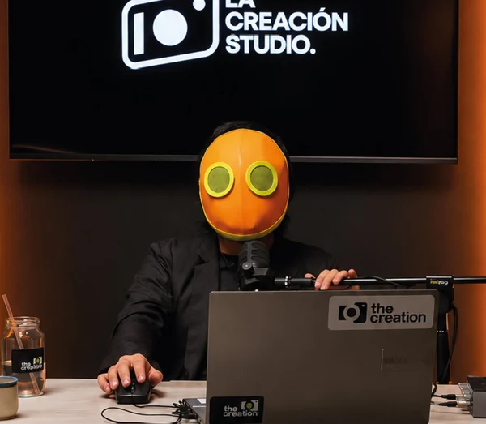
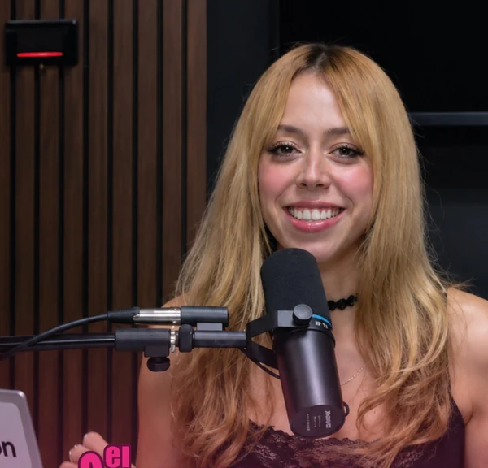
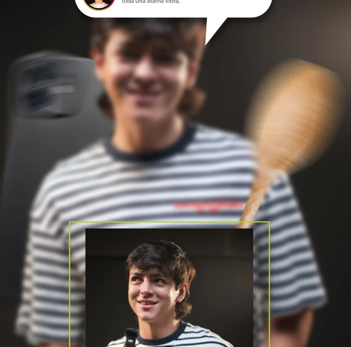
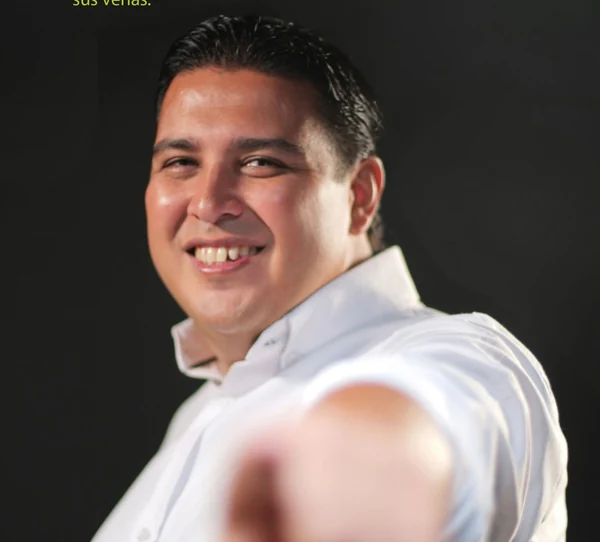
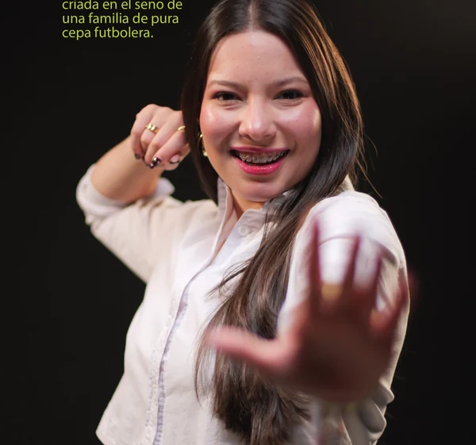
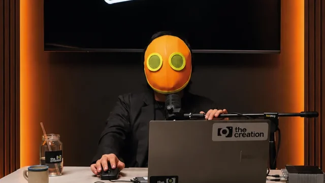
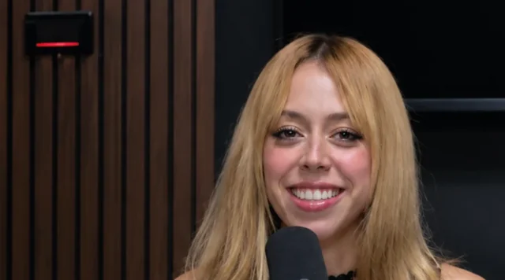
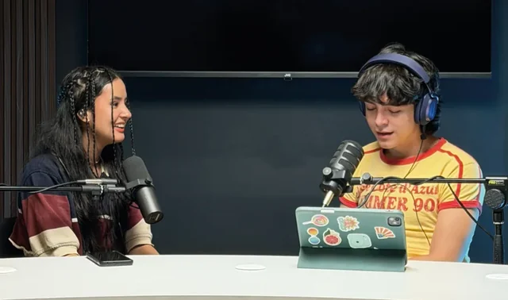
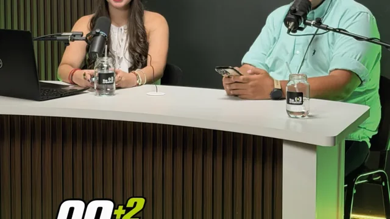

Humor · Entretenimiento
Juan · Late Night Juan
Sátira, cultura de internet y entrevistas sin filtro, con una voz propia para el universo digital.
Detrás de cada gran contenido hay una voz que conecta. Conoce a los creadores y los formatos que forman parte del universo de La Creación Studio.
Creadores, hosts y comentaristas de La Creación Studio.

Sátira, cultura de internet y entrevistas sin filtro, con una voz propia para el universo digital.

Creadora de contenido, streamer, modelo y host, con contenidos centrados en humor y creatividad.

Creador de contenido y host que construye conversaciones con su comunidad.

Locutor de radio con trayectoria frente al micrófono, enfocado en el análisis futbolístico.

Estudiante de Comunicación Social y creadora de contenido con una mirada fresca al fútbol.
Podcasts y programas desarrollados para conectar con distintas comunidades.

Un show nocturno de sátira ácida, cultura de internet y entrevistas sin censura.
Ver Late Night Juan en YouTube
Conversaciones sobre relaciones, dramas, secretos y las historias que se vuelven virales.
Ver El Confesionario en YouTube
Un espacio semanal de cultura pop, dinámicas y conversación con sabor andino.
Ver Modo Alvarito en YouTube
Análisis táctico, debate de calle y pasión futbolera para vivir el fútbol sin filtro.
Ver 90+2 en YouTube¿Quieres desarrollar un formato, producir un podcast o colaborar con nuestro talento? Cuéntanos tu propuesta.
eli@lacreacionstudio.com